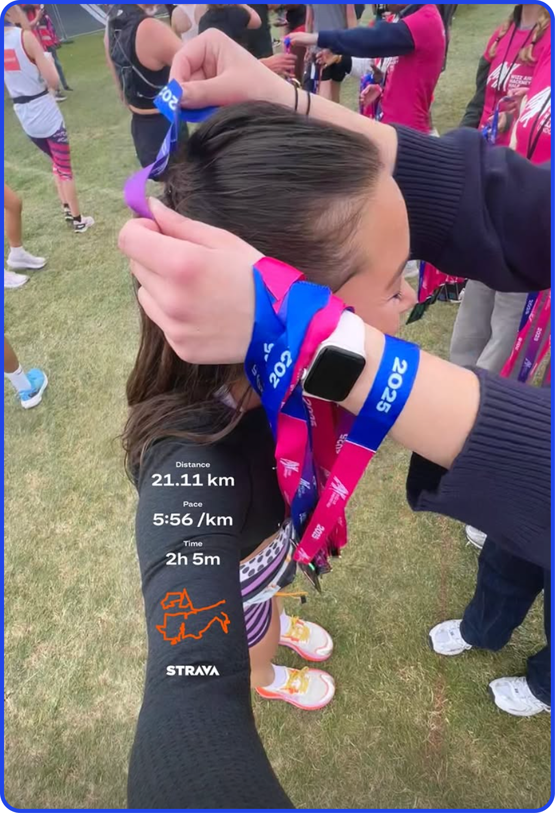

HACKNEY HALF MARA

Running! Running running running. Audrey and I signed up for Hackney Half Marathon charity spots on the last day of 2024. Honestly, I don't really remember the reason other than thinking running looked fun because of Mary McCarthy.
I'd briefly flirted with running in the past, but had never really enjoyed it nor trained consistently. Because "Runfluencers" were on the rise, and they were all using Runna (which has since been acquired by Strava!) for their training plans, I figured it was worth trying the two-week free trial. It was indeed worth it, and I ended up paying for the subscription throughout my 12-week training block. I highly recommend Runna!
The plan had me running three times a week: one easy run, one tempo/interval run, one long run. I skipped a few but mostly stayed on track and quickly became obsessed with getting faster. Running became easier, and it was incredibly fun to both feel the improvements and be able to track them with all the data on my Strava. To put it into perspective, I was able to cut my 5K time by 46% with the 12-week training plan (thanks Runna!!!).
Hackney Half, which took place in May, was so fun. I missed my goal sub-2 hours, which was a shame, but it also makes for a good future goal. I went out too fast because my GPS was acting up, which I think is a rite of passage for most people's first race. The streets were filled with people, Becca had a sign and met me at three different points on the course. I missed Florrie, who was waiting at around the 18K mark, but we all found each other in the fields afterward.
Learning to run far, far further than you ever thought possible, is rewarding in a way I struggle to put into words. I read Murakami's What I Talk About When I Talk About Running in hopes of finding my thoughts on the page, but unsurprisingly, they are entirely his own. I'll give it a go, though.
I have never been much of a patient person. Everything happens fast, at the last moment, after a lull. It never feels like I'm getting ready to pounce so much as I'm taking a long nap before deciding to live multiple days in 24 hours. As a swimmer in middle school, I preferred competing over training. When I write essays, I prefer to write an extensive outline before blasting out the entire thing in an evening as opposed to building it out in parts.
With distance running, the only way to build up to running twenty kilometres without stopping is to build up incrementally. There's no way of cheating, really. The only way out is through; the only way to the finish line is to run the course.
Training for the half felt like one of the rare times I was incredibly intentional about putting consistent effort into building up to something bigger. I don't run nearly as much now but the feeling of hitting your stride, literally, remains unparalleled.